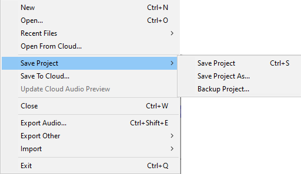
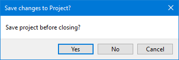
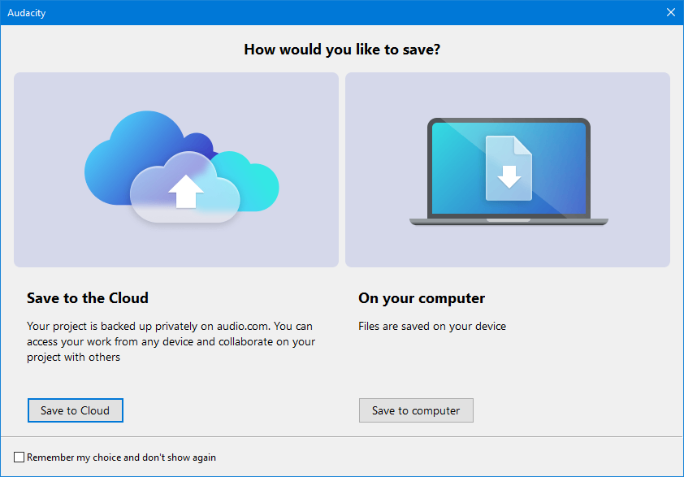

File Menu: Save Project
- The current zoom level is saved in the project when you save the project.
- When a saved project is opened, it should automatically be zoomed to the same place and zoom level as when you saved it.
When you are finished working on a project and you want to use the results in another application, select the Export Audio command.
A project in the new AUP3 format cannot be opened in previous versions of Audacity.
|
- 
Save Project Ctrl + S
Saves the current Audacity Project in uncompressed, lossless quality in a database file with an aup3 extension, for example: My-Project.aup3.
Help with choosing the file name:
|
You are strongly advised not to save your active project to an external USB stick/disk, networked storage or cloud storage as it is unlikely to be fast enough for satisfactory recording and editing.
|
Save Project As
Same as "Save Project" above, but allows you to save a copy of an open project to a different name or location. This can be useful if you want to preserve a copy of the state of a project at a particular time, then proceed to make further changes to the new renamed project you just saved.
If you "Save Project As" with a new name, the project window then displays the project name you just "saved as". The project window displaying the project as previously named is closed in its last saved state, but can be reopened as required.
| You can use "Save Project As" to overwrite an existing project - but you will be given a warning message requesting that you confirm that you really want to do that, and please note that for safety reasons this warning cannot be turned off. |
Backup Project
Saves a backup copy of the current Audacity Project in uncompressed, lossless quality, leaving the current project open for you to continue working on it.
This is the safe and recommended way to make a safety backup copy of a project as you work on it. This could serve either as as one of several incremental copies of the project in the state it had at a particular date and time. Unlike "Save As" using this command will leave your current project open enabling you to continue working on it.
You cannot backup a project to overwrite any existing project name within the target folder, you must specify a new unique name.
Unlike with active projects, it is fine to backup projects to a USB disk/stick, a networked device, cloud storage or even a CD-R, but if you need to restore a backup copy to do further work on it then you should copy the backup to a disk on your computer.
There is a known bug whereby Backup Project fails to honor the setting for Saves in Directories Preferences.
|
The wise user knows that hard drives and SSDs (Solid State Disks) can crash destroying all data and makes regular backups to external storage.
|
Warning on exiting Audacity to save the project
When you try to exit from or close Audacity if changes have been made to the project you will get the following warning prompting you to save the project.
- 
Save to your computer or Muse's audio.com Cloud
The first time you make an export the following dialog will appear.
- 
This enables you to choose whether to save your project to either:
- Directly on your own computer, which will bring up the normal Save dialog.
- Muse's Cloud, which will upload your project to to audio.com.
| If you check on the checkbox for "Don't show again" Audacity will remember your previous choice and not show this dialog the next time you save a project.
If you want to turn this back on again this can be done in Cloud Preferences. |